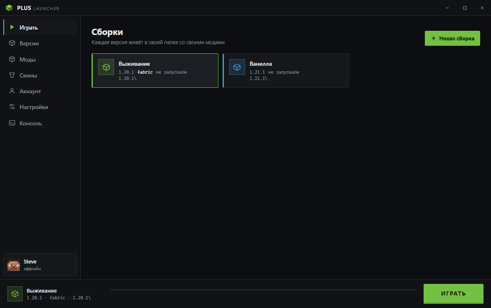
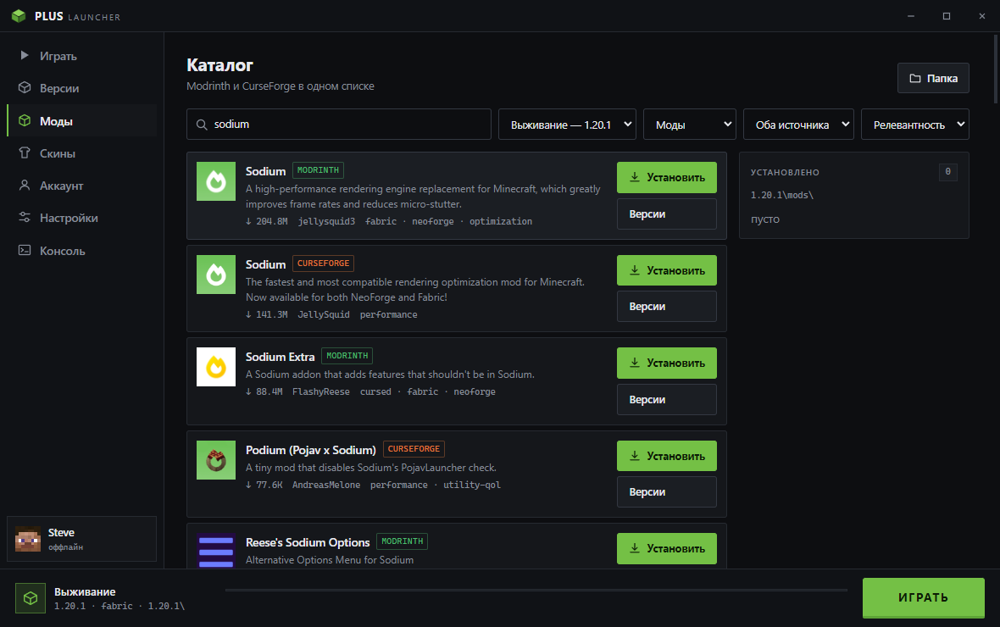
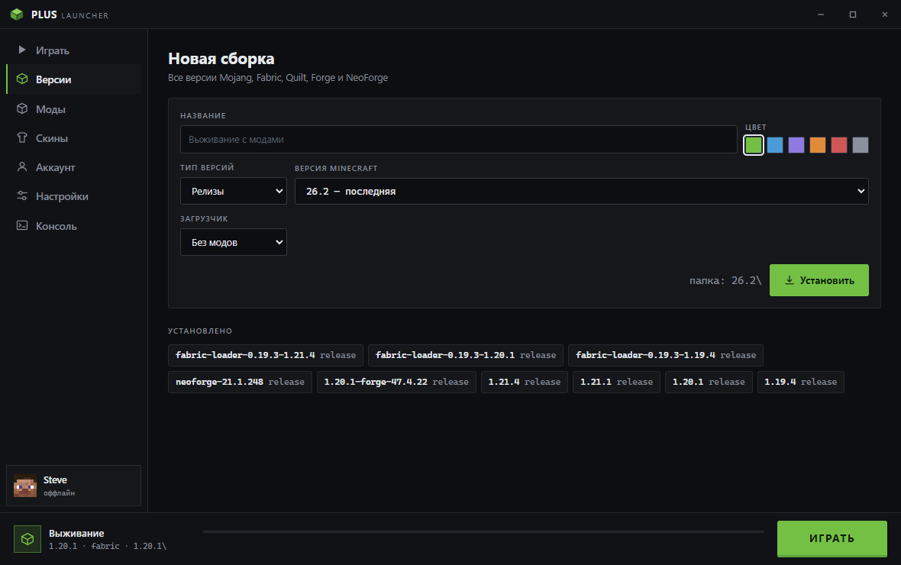
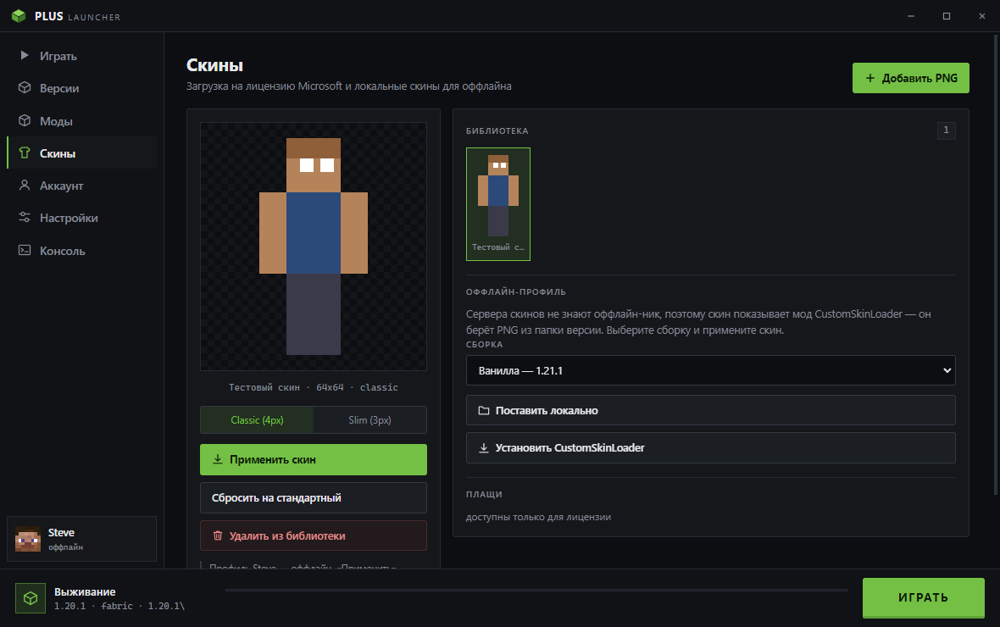

Все версии Mojang
Релизы, снапшоты, старые alpha и beta — полный список прямо из манифеста Mojang, больше девятисот версий.
Лаунчер Minecraft для Windows
От alpha 2010 года до свежих снапшотов. Fabric, Quilt, Forge и NeoForge ставятся в один клик, моды ищутся сразу на Modrinth и CurseForge, у каждой версии своя папка со своими модами и мирами.

Релизы, снапшоты, старые alpha и beta — полный список прямо из манифеста Mojang, больше девятисот версий.
Поиск сразу по Modrinth и CurseForge: моды, ресурспаки, шейдеры, датапаки. Зависимости подтягиваются сами.
Загрузчик ставится вместе с версией — Forge и NeoForge через их же официальный установщик.
У 1.21.4 своя папка, у 1.20.1 своя: моды, миры и конфиги не смешиваются. Папку можно держать на любом диске.
Бесплатный аккаунт со своими скинами и плащами. Есть и оффлайн-профиль для одиночной игры.
Свой скин из PNG с предпросмотром, Classic или Slim. В оффлайне скин подхватывает CustomSkinLoader.
Друзья видят версию, сборку и сколько времени вы уже играете. Выключается одной галочкой.
Лаунчер проверяет новые версии и предлагает поставить обновление, не заходя на сайт.



Кнопка выше открывает страницу релизов на GitHub — берите самый верхний.
Windows покажет синее окно SmartScreen: «Подробнее» → «Выполнить в любом случае». Так бывает у программ без платной подписи разработчика.
При первом запуске лаунчер спросит, где хранить файлы. Можно оставить по умолчанию или указать другой диск.
Нет. Войти можно через Ely.by — бесплатный аккаунт со своими скинами и плащами — или создать оффлайн-профиль для одиночной игры и серверов, которые не требуют лицензию.
Нет. Лаунчер сам найдёт подходящую Java, а если её нет — скачает нужную версию с Adoptium.
В папку версии: например 1.21.4\mods и 1.21.4\saves. Папку лаунчера можно перенести на другой диск прямо из настроек, вместе со всем скачанным.
Установщик не подписан сертификатом — подпись платная. Windows предупреждает о любой неподписанной программе. Файлы всегда берите с этой страницы или из релизов на GitHub.
Скачайте свежую версию со страницы релизов и поставьте поверх — профили, настройки и скачанные версии игры останутся на месте. Лаунчер умеет и сам находить обновления: он проверяет релизы при запуске и предлагает установить новую версию.
Да, как в обычном Minecraft. Аккаунт Ely.by работает на серверах, которые его поддерживают, оффлайн-профиль — на серверах без проверки лицензии.
В настройках есть раздел «Соединение и зеркала»: лаунчер умеет брать те же файлы Mojang с зеркала, VPN для этого не нужен. Там же кнопка проверки — она показывает, какие серверы у вас открываются, а какие нет.